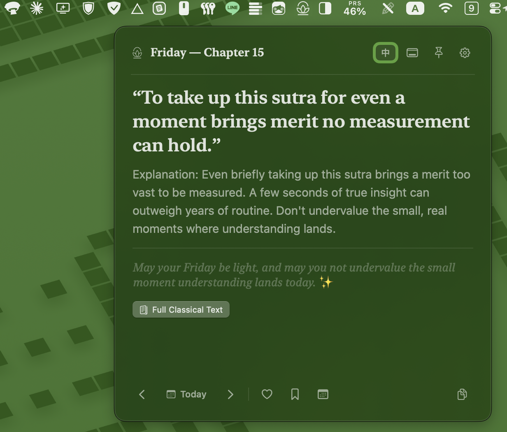

One verse each day from the Diamond Sutra and Heart Sutra, floating quietly in your menu bar. Mathematical determinism, authentic classical Chinese, modern reflections, and zero digital noise.
Notice: This simulator runs the same date-seeded cycle shuffle as the native Mac app. Within an app version, the same calendar date always gives the same verse, and every verse appears once per 42-day cycle.
Most software fights for your dopamine. Daily Sutra is a digital shrine: calm, quiet, mathematically certain, and gone the moment you click away.
No AI recommendations, no feeds, and no engagement tracking. A date-seeded shuffle picks the verse for each day, so every verse appears once per 42-day cycle. Within an app version, the same calendar date always gives the same verse, anywhere, and tomorrow brings the next with gentle inevitability.
Curated from the 32 chapters of the Diamond Sutra and 10 contemplative movements of the Heart Sutra. Unified in a single contemplative pool, presented without doctrinal overwhelm.
Authentic 5th-century Kumārajīva (鳩摩羅什) classical Chinese and Xuanzang (玄奘) Heart Sutra text, accompanied by contemporary English paraphrases, plain-language explanations, and reflective commentary.
Inspired by traditional Xuan paper (宣紙淡墨). Switch seamlessly between modern glass and soothing warm paper tint to soothe your eyes during early dawn or late evening reflections.
Snap directly beneath your menu bar icon with screen-edge safety margins, or drag freely across multiple desktop monitors. Origin coordinates persist seamlessly across restarts.
Toggle the pin button to keep the verse floating beside your journal, code editor, or meditation space across workspace switches.
Press Cmd+C to copy verse, explanation, and personalized daily blessing directly into Obsidian, Apple Notes, Notion, or chat.
Adjust typography effortlessly for studio displays or compact laptop screens with persistent font scaling.
Built purely with Swift 5.9. Zero Electron, zero webviews. Instantaneous launch, a 1.8 MB download, and 0.0% idle CPU.
Zero analytics, zero crash telemetry, zero network requests. Your daily contemplation is entirely private between you and your machine.
Built for macOS 14 Sonoma and later, with refined typography and natural AppKit panel physics.

Modern English verse, plain-language explanation, and daily blessing anchored right below the menu bar.
Download DailySutra.zip from the official GitHub Release (v1.1.4).
Unzip the archive and drag DailySutra.app into your /Applications folder.
Click the lotus icon in your menu bar. The verse panel opens instantly.
Daily Sutra is an open-source indie app. Because it is distributed outside the Mac App Store without an Apple Developer ID signature, macOS may display an unidentified developer warning on first launch. Simply right-click DailySutra.app and select Open, or run:
xattr -dr com.apple.quarantine /Applications/DailySutra.app